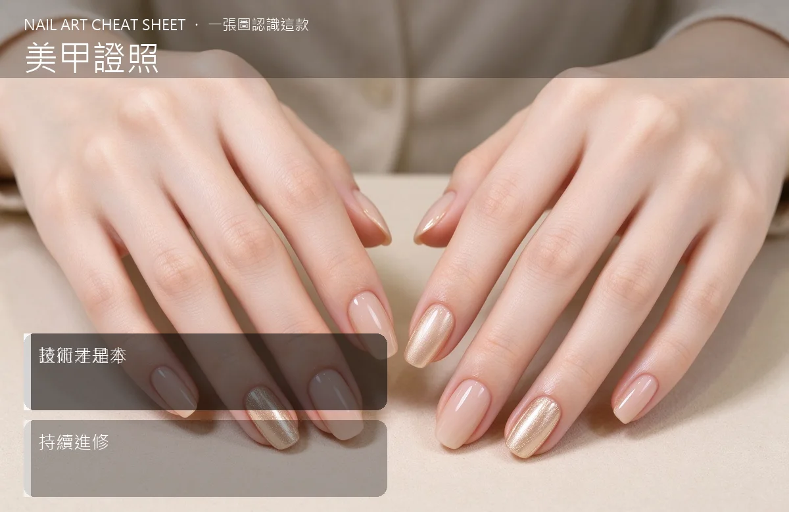

美甲美甲證照是什麼？中階入門攻略
證照是『讓客人放心入門』的加分品，但技術才是你能不能走長遠的本——別考了一堆證、作品照卻很弱。
美甲證照原理與辨識重點：美甲師不說的證照是加分
台灣目前美甲沒有強制的國家證照才能執業，但坊間有許多協會證照（例如美甲協會、美容乙丙級）、國際證照（CIP、INJA）。對客人來說，證照代表『這個人受過基本訓練』；對你自己來說，考證過程能補齊技術觀念（消毒、皮膚認識、甲床構造）。但最後決定你生意的，還是作品、服務、口碑。
誰適合做美甲證照？專業門檻對號入座
剛起步、想知道『要不要花錢考證』的新手；或已經考過幾張、卻懷疑有沒有用的美甲師。
美甲證照美甲施作步驟：國家／協會證照
第一步：先評估你目前目標——如果只是想在家接案，一張基礎協會證照＋好好練作品就夠；如果想開實體店或教課，考美容乙級或國際證照會更有說服力。第二步：挑一個在業界有知名度的協會（不要選那種聽都沒聽過、繳錢就給證的）。第三步：準備時把它當『補課』，特別是衛生、消毒、過敏這幾塊，學了對生意有幫助。
美甲證照優缺點分析：美甲持久度與傷甲評估
| 優點 | 說明 |
|---|---|
| 證照能寫在 IG 個人檔案和 Google 商家上，信任感直接加分；考證過程也能補你技術觀念的漏洞。 | 是通用流派的招牌，中階就能上手 |
| 缺點 | 說明 |
| 時間和金錢成本不低（數千到數萬），而且證照不等于客源。 | 前置與兩雷：①以為考了證就有生意——證照是『信任證明』不是『行銷工具』；②為了證照而證照、不去實戰——你作品照弱，客人還是不會預約。沒顧好會打折 |

美甲證照新手雷區：技術才是本與常見錯誤
注意：兩雷：①以為考了證就有生意——證照是『信任證明』不是『行銷工具』；②為了證照而證照、不去實戰——你作品照弱，客人還是不會預約。
美甲證照和其他美甲做法的差別比較
證照跟『上進修課』不一樣。證照是『一張紙、一個名號』；進修課是『真的學新技術』。兩件事都重要，但如果你只能選一個，先選實用的進修課。
美甲證照美甲常見問題 FAQ
Q：一定要考國家美容證照嗎？ A：台灣美甲沒有強制，但美容乙級在業界普遍被認可，未來想開店、教課、進百貨都用得上。如果資金允許，值得投資。
Q：國際證照值得考嗎？ A：看你路線。想做教學、接團體客、或未來接海外客源，國際證照有幫助；一般在地工作室，一張本地協會＋好作品，客人根本不會問你有幾張國際證。
Q：考證前要先練到什麼程度？ A：不要等『完全準備好』才考。一邊練、一邊報名，考試本身就是一個集中練習的目標。